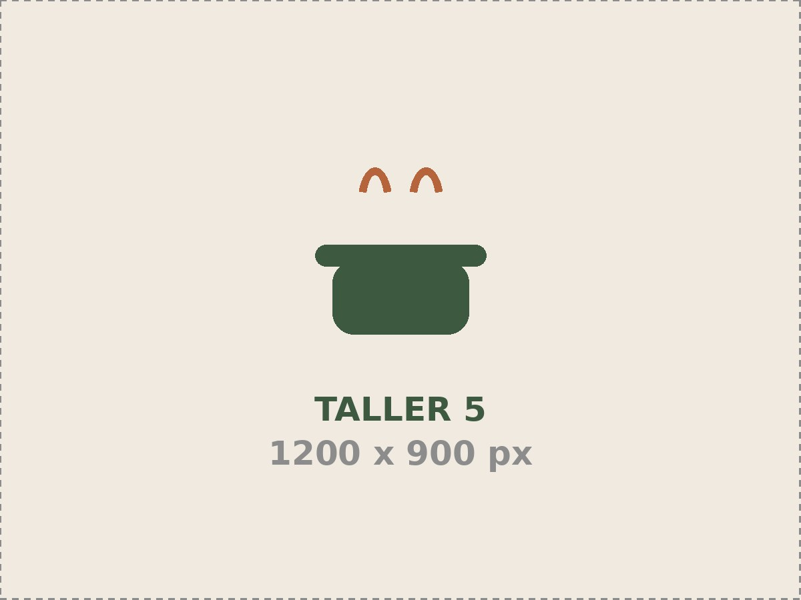

Talleres
Todos los talleres se imparten en grupos de ocho personas, con puesto de trabajo individual.
Calendario y tarifas
| Taller | Nivel | Día | Sesiones | Precio ₡ |
|---|---|---|---|---|
| Cocina de la casa | Inicial | Martes | 4 | 68 000 |
| Intermedio | Jueves | 4 | 72 000 | |
| Panadería | Masa madre | Miércoles | 6 | 95 000 |
| Pan de campo | Viernes | 4 | 70 000 | |
| Bollería | Sábado | 5 | 88 000 | |
| Repostería | Tartas | Martes | 5 | 82 000 |
| Decoración | Sábado | 3 | 58 000 | |
| Los precios incluyen insumos y recetario. Matrícula aparte: ₡10 000. | ||||
Contenido de cada taller
Temario general
- Cocina de la casa
- Fondos y caldos
- Picadillos y guarniciones
- Postres tradicionales
- Panadería
- Fermentación y masa madre
- Formado y greñado
- Horneado con vapor
- Repostería
- Masas quebradas
- Cremas y merengues
- Montaje y decoración
Términos que usamos
- Masa madre
- Fermento natural de harina y agua que sustituye a la levadura comercial.
- Greñado
- Corte que se hace en la masa antes de hornear para controlar su expansión.
- Punto de nieve
- Estado de la clara batida en que forma picos firmes que no caen.
Qué hay que traer
- Delantal, que se puede comprar en la escuela.
- Recipientes para llevarse lo preparado.
- El cabello recogido y calzado cerrado.
- Cuaderno, si prefiere tomar notas a mano.
Importante: avísenos con anticipación si tiene alguna alergia alimentaria. Adaptamos las recetas sin costo adicional.
